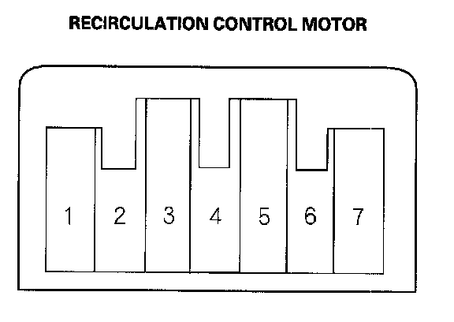

Recirculation Control Motor Test
Recirculation Control Motor TestNOTE: Before testing, check for HVAC DTCs.
1. Disconnect the 7P connector from the recirculation control motor.
NOTE: Incorrectly applying power and ground to the recirculation control motor will damage it. Follow the instructions carefully.

2. Connect battery power to the No. 1 terminal of the recirculation control motor, and ground the No. 5 and No. 7 terminals; the recirculation control motor should run smoothly. To avoid damaging the recirculation control motor, do not reverse power and ground. Disconnect the No. 5 or No. 7 terminals from ground; the recirculation control motor should stop at Fresh (when the No. 5 terminal is disconnected) or Recirculate (when the No. 7 terminal is disconnected). Don't cycle the recirculation control motor for a long time.
3. If the recirculation control motor did not run in step 2, remove it, then check the recirculation control linkage and door for smooth movement.
- If the linkage and door move smoothly, replace the recirculation control motor.
- If the linkage or door stick or bind, repair them as needed.